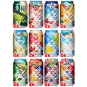

キリン 旅する氷結11種＋シャルドネ 飲み比べバラエティ350ml×24本
【セット内容】 ※2018年05月18日出荷分からセット内容変更 キリンチューハイ 旅する氷結 ピーチアモーレ 350ml：2本 キリンチューハイ 旅する氷結 ハオチーライチ 350ml：2本 キリンチューハイ 旅する氷結 ロコロコパイン 350ml：2本 キリンチューハイ 旅する氷結 マンマレモンチーノ 350ml：2本 キリンチューハイ 旅する氷結 アップルオレンジサングリア 350ml：2本 キリンチューハイ 旅する氷結 カリビアンモヒート 350ml：2本 キリンチューハイ 旅する氷結 オレンジカウボーイ 350ml：2本 キリンチューハイ 旅する氷結 フォレストベリー 350ml：2本 キリンチューハイ 旅する氷結 ヨーグルモサワー 350ml：2本 キリンチューハイ 旅する氷結 グレープフルーツドッグ 350ml：2本 キリンチューハイ 旅する氷結 アップルジンジャー 350ml：2本 キリンチューハイ 氷結 シャルドネスパークリング 350ml：2本 商品の外装箱は混載されておりますいずれかの外装箱（単一銘柄の外装箱）での出荷となります 内容量：350ml×24本